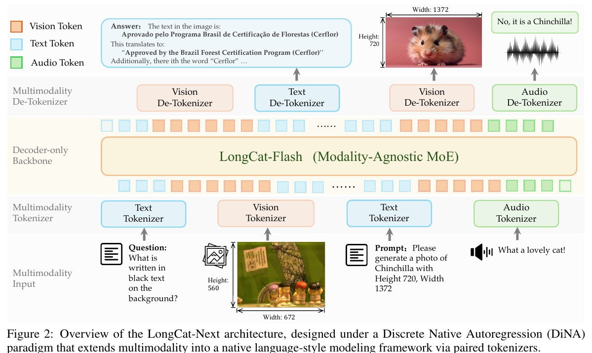
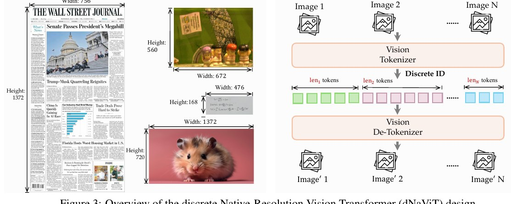
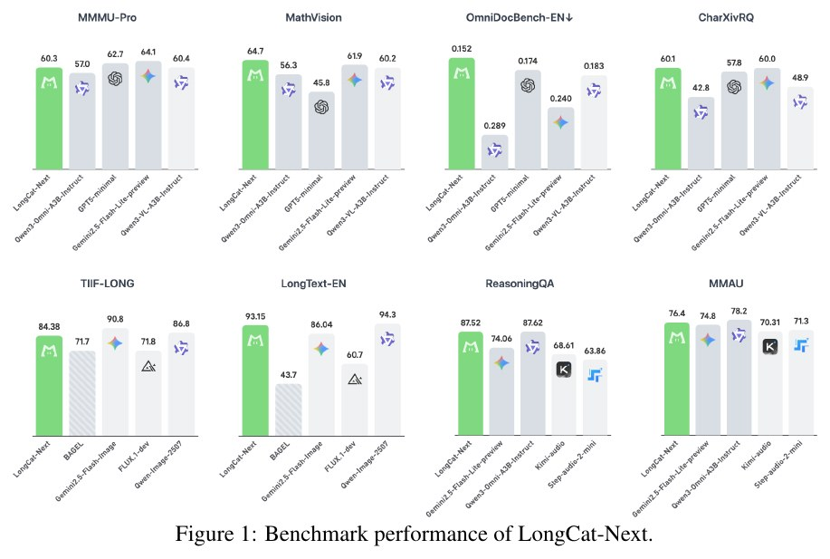

速览
发布日期取 arXiv v1（2026-03-29）。本页依据的论文文本即 v1（文本首页标注 arXiv:2603.27538v1）。
五条要点
一切皆离散 ID，一个 NTP 目标
文本、图像、音频各有 tokenizer / de-tokenizer，骨干是模态无关的 MoE，不加 modality-aware MoE、3D RoPE、双向注意力§2.4。视觉与音频 embedding 随机初始化，与文本一起端到端学§2.5。
dNaViT：语义编码器 + 残差量化
直接用 Qwen2.5-ViT 做「语义对齐编码器」（SAE），后接 8 级 RVQ§4.1.1§9.3。输入时 8 级 embedding 相加成 1 个 token，输出时 DepthTransformer 一步并行解出 8 级§9.4。
离散理解追平连续
MathVista 83.1、MathVision 64.7、OmniDocBench-zh 0.226（↓）均为表 1 最好表 1；但 OCRBench 86.5 低于 Qwen3-VL-A3B 的 90.3*。Qwen-7B 小实验里，数据放大到 300B 后离散与连续基本持平图 9。
生成强在长文字渲染
LongText-EN 93.15 / ZH 89.08、CVTG 76.36、GenEval 84.44表 2，统一模型里领先多数项表 3；对专用模型仍落后 Qwen-Image 2507、Emu-3.5 多数项。
要打折看的地方
图像数据在 2T token 中的配比未披露；RL 只在 Qwen-7B 降配设置上验证§9.2；dNaViT 自身重建质量无定量指标；表中自测值与引用值（*）混排。
架构：配对 tokenizer + 模态无关 MoE
DiNA（Discrete Native Autoregression）的做法很朴素：每种模态一对「tokenizer ↔ de-tokenizer」负责信号与离散 ID 互转，中间的 decoder-only 骨干只看 ID 序列§2.1。

相对「连续 ViT + 投影」与同类统一模型的改动
视觉侧：语义编码器 + RVQ，而不是 VQ-VAE§2.2
作者把现有视觉 tokenizer 分三类：低层重建型（VQ-VAE，Emu / Chameleon）、自监督语义型（SigLIP / DINOv2，Janus）、无编码器（EVE / NEO），主张第四类「语义对齐编码器 SAE」——即 VLM 里训过大量 QA 的 ViT——才同时够理解与生成用§2.2.1。实际直接拿 Qwen2.5-ViT，没有自训 SAE§4.1.1。
量化：8 级 RVQ + EMA 码本§2.2.3
投影后的特征逐级量化残差；码本用 EMA 更新、Laplace 平滑、死码（Nk<1）用当前 batch 重新初始化；监督只有 commitment loss + 语义特征余弦重建，不做像素重建式 5。附录称 8 级相对 2 级与单级 VQ 的特征重建损失显著更低图 19。
de-tokenizer 与 tokenizer 解耦§2.2.4
先训完 tokenizer 并冻结 SAE 与码本，再单独训像素解码器（Lpixel + Lpercep + Lalign）。只用解码器结果偏糊，所以再加一个以重建图和离散 embedding 为条件的 flow-matching refiner§4.1.1。
语言骨干与输出头§2.4–2.5
LongCat-Flash-Lite A3B 作骨干，所有模态走同一路径。文本 head 是标准 MLP；视觉 / 音频由任务感知的 DepthTransformer 并行解多级 token§2.5.2。语音输出沿用 Moshi 式「文本引导音频」，用随机延迟把串行与并行两种生成统一到一个训练格式§2.5.3。

两条有意思的分析：残差通路与 MoE 分化§3.2.2 · §3.2.5
残差通路保留低层信息。冻结不同编码器、接同一个轻量 ViT 解码器做重建：随机初始化的 ViT-B/16 PSNR 30.52，高于预训练 ViT-B/16 的 21.86 和 ResNet50 的 20.88；去掉 merger 的 QwenViT 为 18.16表 6。作者据此认为语义编码器的残差连接天然保留了一条低层信号通路，加上 merger（14×→28× 下采样）会明显变差§3.2.2。
| 指标 | ResNet50 | ViT-B/16（预训练） | ViT-B/16（随机） | QwenViT（无 merger） |
|---|---|---|---|---|
| PSNR ↑ | 20.88 ± 3.44 | 21.86 ± 3.14 | 30.52 ± 3.42 | 18.16 ± 2.61 |
| SSIM ↑ | 0.509 ± 0.174 | 0.581 ± 0.139 | 0.887 ± 0.051 | 0.46 ± 0.14 |
| rFID ↓ | 0.4619 | 0.8850 | 0.5847 | 0.987 |
来源：表 6。● 为本页按数值标出的列内最优。
模态无关 MoE 自发分化。多模态训练后，部分专家出现对视觉或音频的偏好，路由更稳定；每个专家平均接收的 token 从 507.1 升到 584.6§3.2.5。t-SNE（50,000 点）显示 LongCat-Next 的视觉与文本 token 交织分布，Qwen2.5-VL 则分簇图 12。
数据：四条管线，规模有、总配比无
原文按「tokenizer 训练 / 视觉理解 / 视觉生成 / 音频」分别写了数据。文本、理解、生成、音频在约 2T token 里各占多少，各阶段 token 数，均原文未披露；能画比例条的只有音频预训练任务格式（表 8）。
已披露规模
| 数据 | 规模 / 构成 | 出处 |
|---|---|---|
| Tokenizer 训练 | ||
| 视觉 tokenizer（RVQ） | 约 50M 张任意分辨率图像：LAION、COYO、DataComp、TextAtlas + 自有理解数据子集 + 高保真合成图（如 MidJourney） | §4.1.1 |
| 视觉 de-tokenizer | 复用上述图像，另加 SAM-1B、RenderedText、IDL、自有高分辨率图；数量原文未披露 | §4.1.1 |
| 音频 tokenizer | 约 250 万小时：网络中英文语音（开源 ASR 自动转写）+ 多语种 / 方言 ASR、自合成语音、音乐与声音 caption | §4.1.2 |
| 视觉理解 | ||
| OCR | 75% 自合成 + 25% 来自 90+ 开源数据集的过滤真实数据；其中图表→代码 / 表格 / JSON 元组 4.2M（取自 arXiv） | §4.2.1 |
| STEM | 60% 开源（70+ 数据集）+ 40% 自有 / 合成 | §4.2.1 |
| Grounding | 约 60M 样本，10+ 公开来源（GRiT、Visual Genome、RefCOCO 系、Objects365、OpenImages 等） | §4.2.1 |
| Counting | 8M 样本（PixMo-Points、TallyQA 为基础） | §4.2.1 |
| Caption / 交错 / GUI | 数量原文未披露；GUI 真实轨迹来自「数万并发会话」 | §4.2.1 |
| 视觉生成 | ||
| 文生图图文对 | 约 300M（多公开来源 + 网络平台）；含文字密集子集（合成排版、自然场景文字、海报广告、信息图），子集规模原文未披露 | §4.3 |
| 音频 | ||
| 网络音频 | 原始 19.9M 小时 → 清洗后保留 3.2M 小时（原文写占 16.2%） | §4.4.1 |
| 合成语音-文本 | 1.2M 小时 | §4.4.1 |
| 任务专用 | 0.4M 小时（副语言感知、音频事件等） | §4.4.1 |
| RL（Qwen-7B 验证实验） | ||
| 理解 RL | ViRL39K + Orsta-Data-47k + 自有数据，去重并去掉 4 次 rollout 全对 / 全错的题，剩约 30K | §9.2 |
| 生成 RL | 约 40K 条 prompt，每条可对应多个奖励 | §9.2 |
视觉生成数据：三段式递进 §4.3 · 图 14
出发点：网络图文对高度长尾，模型容量被「通用人像、常见物体」这类高频模式吃掉；而过度审美过滤又会把输出推向同质化的「AI 风」§4.3.2。所以按阶段换数据目标。
图 14 右侧有一张图像来源类别饼图（Photo、Portrait、Product、Digital Art、Architecture 等十余类），但纯文本抽取后标签与百分比无法可靠对应，本页不转录这些比例，请以原 PDF 为准。
视觉理解数据 §4.2
Image Caption§4.2.1
三步：启发式去损坏 / 异常分辨率 / 低质图 → 多个开源 LVLM 重写 caption，把稀疏标签变成细描述 → SigLIP 相似度阈值剔除错配对。
交错图文§4.2.1
网页图文用 CLIP 分数过滤；视频切场景取关键帧，ASR + OCR 抽文本，组织成交错序列。
OCR§4.2.1
文档版面转 Markdown、表格标 HTML；arXiv 合成 4.2M 图表元组；场景文字做去污染并重标，刻意加入词表外（OOV）文字组合压语言先验与幻觉；SynthDoG、LaTeX 造艺术字 / 手写 / 扭曲面。SFT 阶段按简单 / 中等 / 复杂三档出题，用规则过滤 + LLM-as-judge + 拒绝采样控质量。
STEM§4.2.1
70+ 开源集（MAVIS、AI2D、MMK12、ViRL39K 等）深度去重重采样；自有 K12 内容带专家推理链；题面清洗改写，并为每题构造逐步推理链。
GUI§4.2.1
参考 UI-TARS / EvoCUA 自动采轨迹；去视觉噪声、对齐坐标格式、元数据转自然语言意图；开源集（AgentNet、ScaleCUA）按 OS / 应用平衡。疑难样本用「轻模型去空间噪声 + 强推理模型修语义与坐标」双模型救回。
Grounding / Counting§4.2.1
预训练 VLM 过滤错配框；坐标统一归一化到 [0, 1000]。
清洗、过滤与采样（理解 SFT）§4.2.2
- 去污染：图像 pHash 匹配 + 文本 N-gram 重叠，剔除与公开基准高度相似的样本；再按语义聚类去重。
- 质量过滤：规则剔除 CoT 里的链接、格式错误、冗余；模型比对 CoT 与标准答案剔错误推导；对 caption 打「知识密度」分优先保留。
- 采样：每条数据标来源 / 难度 / 领域 / 质量分；难度 = 多次 rollout 的正确率，动态调易中难比例；按任务复杂度平衡 CoT 长度；每个来源设最低保留比例，防过滤过头丢掉专项能力。具体比例原文未披露。
音频数据 §4.4
网络音频管线：VAD、强制对齐、去重、双 ASR 一致性过滤、DNSMOS 质量过滤、背景噪声过滤 → 说话人 embedding 聚类，保留中频簇，压制过度代表的合成音色与极稀疏离群类 → 按自然语音的幂律长度分布重新切分§4.4.1。合成语音按代表性说话人簇构造参考音色，并用说话人相似度和 ASR 一致性控质量。
纯音频模态在 ASR、INTLV、INTLV-TA 数据里不计损失；TTS 与 INTLV-TA 中的文本引导音频对文本与音频 token 联合计损§4.4.2。
训练配方：先训 tokenizer，再四段统一训练
两大阶段：模态专属 tokenizer 训练 → DiNA 下的原生多模态训练（tokenizer 全程冻结）§4.1。学习率、优化器、RVQ 衰减系数 γ、各损失权重 λ、各阶段 token 数均原文未披露。
Phase I · tokenizer
视觉 dNaViT§4.1.1
- Stage 1 量化：先固定分辨率快速收敛，再任意分辨率训练；变长序列打包 + varlen FlashAttention，序列上限 8192，最大图像 1,736×1,736，约 50M 张图训到收敛。
- Stage 2 反量化：SAE 与码本冻结；400M 像素解码器 ViT 从零训（MLP patch unmerger 还原 SAE 的空间合并 → 2D RoPE Transformer → 线性头到像素）；refiner 从 OmniGen2 初始化，条件 = 解码图（通道拼接噪声 latent）+ 离散 code embedding。
音频§4.1.2
- Stage 1：编码器（Whisper-large-v3）与 LLM（Qwen3-1.7B）冻结，只训解码器做 Mel 重建。
- Stage 2：开启 8 层 RVQ（8k/4k/2k/1k/1k/1k/1k/1k），除 LLM 与 flow matching 外全训，重建 + commit + LLM 三项损失。
- Stage 3：用 24kHz 高质量音频，解码器改为 DiT 去 RVQ 伪影。训练完丢弃 Qwen3-1.7B。
Phase II · 原生多模态训练 表 7 · 图 13
Pre-Align
- 可训
- embedding + DepthT.
- Batch
- 8192
- Seq
- 8K
Pre-training
- 可训
- 全部
- Batch
- 8192
- Seq
- 8K
Mid-training
- 可训
- 全部
- Batch
- 1024
- Seq
- 32K
SFT
- 可训
- 全部
- Batch
- 128
- Seq
- 64K
| 阶段 | 视觉（V） | 音频（A） | 文本（T） |
|---|---|---|---|
| S1 Pre-Align | 图文 caption 对 | 纯音频、ASR、TTS、交错数据 | — |
| S2 Pre-training | + 交错数据、OCR、Grounding、固定分辨率生成 | 同上一阶段 | 纯文本 |
| S3 Mid-training | + 长 CoT、通用 QA、视频、GUI、任意分辨率生成 | 高质量数据、多轮对话 | 同上一阶段 |
| S4 SFT | 高质量指令、推理、任意分辨率生成 | 指令数据 | 长纯文本 |
表 7 在纯文本中排版错位，上表按列位置还原，细节以原 PDF 为准。正文补充：中期训练加入更多合成与精选数据，理解分支加长 CoT，生成分支加任意分辨率训练§4.1.3。
后训练 / RL §6.1 · §9
原文把 RL 放在「Advantages and Future Work」一章，验证实验用 Qwen-7B 骨干§9.2；发布的 LongCat-Next 是否做过 RL，原文未说明，§4.1.3 的四段流程也不含 RL。
文生图 GRPO
- 离散视觉 token 直接当动作空间，无需 flow 模型的 ODE→SDE 改造
- 对 RVQ 每一级算 GRPO 损失，按权重 wl 加总（式 10；wl 取值未披露）
- 四类奖励：检测式数量 / 颜色 / 位置 / 属性；GOT-OCR 2.0 编辑距离（每条 prompt 2–20 段文字，按长度分桶）；VLM 语义对齐；HPS + Aesthetic Score + UnifiedReward
理解 GRPO + 序列级过滤
- 问题：熵与训推不一致同步上升，长 rollout 出现乱码 token，形成正反馈
- 熵过滤：序列熵 > μH + nσH 整条丢弃
- 训推差过滤：任一 token |πsampler − πactor| > δ 整条丢弃（n、δ 未披露）
- TIS / MIS 只把熵爆炸推迟几步§9.1
Qwen-7B 上的效果
- GenEval Overall 83.94 → 87.33；counting +7.50、position +6.75、color_attr +4.56表 9
- MMStar 66.33 → 71.13，RealWorldQA 66.01 → 72.54，MathVision 49.28 → 53.52表 9
- OmniDocBench-en 0.256 → 0.266（↓ 越低越好，反而变差）表 9
基础设施：V-Half 流水线并行§5.1
多模态下 embedding 层与模态损失模块（DepthTransformer）的耗时随样本模态分布波动，均匀切流水线会严重不平衡。做法：把流水线折成 V 形，embedding 与模态损失模块放在同一设备（共享 buffer，前后向都是设备内零拷贝）；LLM head 带少量层单独成一段；其余层均分。先 profile 各模块耗时再分配。原文未给吞吐或 MFU 数字。
评测：理解 · 生成 · 音频 · 文本
主对比对象是 Qwen3-Omni-A3B-Instruct（全模态），理解另比 Qwen3-VL-A3B-Instruct、InternVL3.5-A3B-Flash（专用 VLM）及 GPT5-minimal、Gemini2.5-Flash-Lite§3。表中带 * 的数值取自公开报告，不带 * 的基线是作者自测，两者混排。下图横轴均从 0 起，紫色为 LongCat-Next。
理解：关键对比 表 1
| Benchmark | LongCat-Next | Qwen3-Omni-A3B | Qwen3-VL-A3B | InternVL3.5-A3B-Flash | Gemini2.5-Flash-Lite |
|---|---|---|---|---|---|
| MMMUval | 70.6 | 69.1* | 74.2* | 75.6* | 74.9 |
| MathVistamini | 83.1 | 75.9* | 80.1* | 80.9* | 78.2 |
| MathVision | 64.7 | 56.3* | 60.2* | 55.7* | 61.9 |
| OmniDocBenchzh ↓ | 0.226 | 0.406 | 0.253* | 0.359 | 0.312 |
| CharXivRQ | 60.1 | 42.8 | 48.9* | 48.0* | 60.0 |
| OCRBench | 86.5 | 85.4* | 90.3* | 88.0* | 84.8 |
| OCRBenchV2en | 58.5 | 62.0 | 63.2* | 47.0 | 51.5 |
| MMStar | 69.3 | 68.5* | 72.1 | 72.0 | 74.93 |
| ScreenSpot-V2 | 88.3 | 91.8 | 87.7 | 87.3* | – |
完整表 1：视觉理解 20 项含 GPT5-minimal
| Benchmark | LongCat-Next | Qwen3-Omni-A3B | GPT5-minimal | Gemini2.5-Flash-Lite | InternVL3.5-A3B-Flash | Qwen3-VL-A3B |
|---|---|---|---|---|---|---|
| STEM & Reasoning | ||||||
| MMMU-Pro | 60.3 | 57.0* | 62.7* | 64.1 | – | 60.4* |
| MMMUval | 70.6 | 69.1* | 74.4* | 74.9 | 75.6* | 74.2* |
| MathVistamini | 83.1 | 75.9* | 50.9* | 78.2 | 80.9* | 80.1* |
| MathVision | 64.7 | 56.3* | 45.8* | 61.9 | 55.7* | 60.2* |
| VisuLogic | 29.4 | 20.0 | – | 26.1 | 28.4 | 23.0* |
| BabyVision | 14.4 | 11.9 | – | 19.6 | 11.3 | 16.0 |
| OCR & Doc & Chart | ||||||
| OmniDocBenchen ↓ | 0.152 | 0.289 | 0.174* | 0.240 | 0.246 | 0.183* |
| OmniDocBenchzh ↓ | 0.226 | 0.406 | 0.389* | 0.312 | 0.359 | 0.253* |
| CharXivDQ | 89.9 | 78.8 | 79.5* | 91.2 | 81.8* | 85.5* |
| CharXivRQ | 60.1 | 42.8 | 57.8* | 60.0 | 48.0* | 48.9* |
| ChartQA | 88.0 | 86.8* | 59.1* | 79.0 | 87.4* | 86.8* |
| InfoVQAtest | 83.3 | 84.4 | 69.9* | 82.2 | 81.4* | 81.8* |
| DocVQAtest | 94.2 | 94.1 | 89.6* | 91.8 | 94.2* | 95.0* |
| OCRBench | 86.5 | 85.4* | 78.7* | 84.8 | 88.0* | 90.3* |
| OCRBenchV2en | 58.5 | 62.0 | 48.2* | 51.5 | 47.0 | 63.2* |
| OCRBenchV2zh | 59.3 | 60.5 | 37.7* | 39.5 | 48.2 | 57.8* |
| Agent | ||||||
| OSWorld-G | 58.3 | 60.3 | – | – | 42.4* | 60.5* |
| ScreenSpot-V2 | 88.3 | 91.8 | – | – | 87.3* | 87.7 |
| General | ||||||
| MMStar | 69.3 | 68.5* | 65.2* | 74.93 | 72.0 | 72.1 |
| RealWorldQA | 72.0 | 72.9 | 77.3* | 70.5 | 72.3 | 73.7 |
| CountBench | 82.1 | 83.8 | 87.8* | 90.0 | 84.2 | 90.6 |
* = 取自公开报告（原表注）。MMStar 行 Qwen3-Omni 的 * 由纯文本中上标位置判断。正文写 CountBench 82.5、OCRBench 865，与表中 82.1、86.5 不一致或量纲不同。
文生图：对专用模型 表 2
| Model | GenEval | DPG | LongText-EN | LongText-ZH | WISE | TIFF | CVTG |
|---|---|---|---|---|---|---|---|
| Emu-3.5 | 72.67 | 89.42* | 97.60* | 92.80* | 57.64 | 89.48 / 88.18* | 91.23* |
| Qwen-Image 2507 | 87.00* | 88.32* | 94.30* | 94.60* | 63.00* | 86.10* / 86.80* | 82.88* |
| Gemini 2.5 Flash Image | 79.67 | 85.82 | 86.04 | - | 76.27 | 90.53 / 90.80 | 73.64* |
| FLUX.1-dev | 66.00* | 84.00* | 60.70* | 0.50* | 50.00* | 71.10 / 71.80* | 49.65* |
| Seeddream 3.0 | - | 94.31* | 89.60* | 87.80* | - | 86.02 / 84.31* | 59.24* |
| LongCat-Next | 84.44 | 84.66 | 93.15 | 89.08 | 57.00 | 82.85 / 84.38 | 76.36 |
* = 取自公开报告（原表注）。● 为本页按数值重判的列内最好。原文称「在 GenEval 与 LongText 上追平或超过更大的模型」，实际 GenEval 低于 Qwen-Image 2507、LongText-EN 低于 Emu-3.5 与 Qwen-Image；对 FLUX.1-dev 则全面领先。
表 3：统一模型对比（节选）原表注「All results are from public reports」
| Model | MMMU | MathVista | OCRBench | DocVQA | MMStar | GenEval | DPG | LT-EN / ZH | WISE | CVTG |
|---|---|---|---|---|---|---|---|---|---|---|
| Janus-Pro | 41.0 | – | – | – | – | 80 | 84.19 | 1.90 / 0.60 | 35 | – |
| BAGEL | 55.3 | 73.1 | 80.9 | 92.2 | 69.3 | 82 | 85.07 | 纯文本列错位，略 | 35.60 | |
| NEO-unify | 68.9 | – | 81.5 | 91.6 | 65.5 | 85 | 86.71 | 91.40 / 75.50 | 42 | – |
| Ovis-U1 | 51.1 | 69.4 | 88.3 | – | – | 89 | 83.72 | 3.00 / 5.10 | 42 | 9.30 |
| X-Omni | – | – | 70.4 | – | – | 83 | 87.65 | 90.00 / 81.40 | – | – |
| InternVL-U | 54.7 | – | 83.9 | – | – | 85 | 85.18 | 73.80 / 86.00 | 46 | 62.30 |
| BLIP3-o | 50.6 | – | – | – | – | 84 | 81.60 | – / – | 62 | – |
| LongCat-Next | 70.6 | 83.1 | 86.5 | 94.2 | 69.3 | 84 | 84.66 | 93.15 / 89.08 | 57 | 76.36 |
节选 8 / 14 行。GenEval 上 OneCAT（90）、Mogao（89）、Ovis-U1（89）、Lumina（88）高于 LongCat-Next 的 84；DPG 上 LongCat-Next 84.66 处于中游。它的优势集中在理解列与长文字渲染（LT、CVTG）。
表 4：音频（节选）ASR / TTS 为 WER ↓
| Benchmark | LongCat-Next | Gemini-3.1-Flash-Lite-preview | Qwen3-Omni-A3B | MiMo-Audio | Kimi-Audio | Step-Audio-2-mini |
|---|---|---|---|---|---|---|
| ASR ↓ | ||||||
| LibriSpeech test-clean | 1.63 | 2.38 | 1.22* | 2.47 | 1.28* | 1.33* |
| AISHELL-1 | 1.47 | 6.00 | 0.84* | 1.69 | 0.60* | 0.78* |
| WenetSpeech test-meeting | 8.19 | 20.37 | 5.89* | 9.49 | 6.28* | 4.87* |
| TTS ↓ | ||||||
| SeedTTSzh | 1.90 | - | 1.07* | 1.96* | 13.46 | 2.13* |
| SeedTTSen | 1.89 | - | 1.39* | 5.37* | 29.45 | 3.18* |
| Audio Understanding ↑ | ||||||
| MMAU | 76.40 | 71.70 | 78.20 | 75.80 | 70.31 | 71.30 |
| TUT2017 | 43.09 | 23.15 | 40.74* | 15.06 | 65.25* | 30.67* |
| Audio-to-Text Chat ↑ | ||||||
| ReasoningQA | 87.52 | 65.64 | 87.62 | 75.34 | 68.61 | 63.86 |
| AlpacaEval | 86.83 | 62.56 | 90.10 | 85.67 | 78.74 | 53.06 |
* = 取自公开报告。评测用 Kimi-Audio-Evalkit，音频 QA 以 gpt-4o-2024-08-06 作裁判；MMAU 用 v05.15.25 test-mini§3.1.3。ASR/TTS 上 Qwen3-Omni（引用值）多数更低；LongCat-Next 明显优于自测的 Gemini 与 MiMo-Audio。
表 5：纯文本能力对比 Kimi-Linear、Qwen3-Next、Qwen3-Omni
| Benchmark | LongCat-Next | Kimi-Linear-48B-A3B | Qwen3-Next-80B-A3B-Instruct | Qwen3-Omni-A3B-Instruct |
|---|---|---|---|---|
| Tau2-Airline (avg@8) | 56.50 | 44.00 | 45.5* | 27.00 |
| Tau2-Retail (avg@8) | 73.68 | 18.86 | 57.3* | 40.80 |
| Tau2-Telecom (avg@8) | 62.06 | 15.68 | 13.2* | 4.39 |
| SWE-Bench (acc) | 43.00 | 32.80 | 37.60 | - |
| TerminalBench (acc) | 18.75 | 20.00 | 15.19 | - |
| MMLU (acc) | 83.95 | 79.91 | 89.28 | 87.10 |
| MMLU-Pro (acc) | 77.02 | 67.22 | 82.93 | 79.89 |
| CMMLU (acc) | 82.13 | 76.26 | 86.50 | 85.76 |
τ²-Bench 用的是作者所称「降噪修订版」（AGI-Eval tau2-bench-revised）§3.1.4 脚注。知识类（MMLU 等）低于 Qwen3-Next 与 Qwen3-Omni。表中未列纯文本前代（LongCat-Flash-Lite）对比，「无多模态税」缺直接证据。
方法分析：离散 vs 连续、理解 vs 生成 §3.2
| Exp | I | II | III | IV | V | VI | VII |
|---|---|---|---|---|---|---|---|
| 表征 | 连续 | 离散 | 连续 | 离散 | 离散 | 连续 | 离散 |
| PT / MT&SFT token | 0.1B / 4B | 0.1B / 4B | 5B / 4B | 5B / 4B | 5B / 4B | 5B / 300B | 5B / 300B |
| Pre-Buffer | - | ✓ | - | ✓ | ✗ | - | ✓ |
| OCRBench | 779 | 598 | 776 | 720 | 705 | 858 | 844 |
| DocVQA | 88.2 | 78.0 | 88.9 | 86.7 | 85.2 | 96.0 | 96.0 |
| MMMUval | 49.8 | 44.8 | 49.1 | 48.0 | 49.8 | 58.0 | 60.0 |
| MathVista | 59.6 | 47.3 | 56.1 | 54.2 | 56.7 | 75.0 | 74.0 |
来源：图 9 右表（Qwen-7B 降配设置）。少数据时离散明显落后（I vs II：OCRBench 779 vs 598），放大到 300B 后基本持平（VI vs VII）。注意 V（无 Pre-Buffer）在 MMMU、MathVista 上反而高于 IV（有 Pre-Buffer）。
理解与生成冲突：同一 checkpoint，纯理解、纯生成各 100B token，统一模型 50B+50B（1:1）；按比例缩放 loss 曲线后，统一模型比纯理解只差 0.006，比纯生成低 0.02，作者据此称「生成不伤理解，理解帮助生成」§3.2.3。只有 loss，没有下游指标。语音并行 vs 串行：LlamaQuestions 79.33 vs 81.67，ReasoningQA 74.95 vs 80.30§3.2.4。
新在哪
用 VLM 的 ViT 当量化前空间，并在 A3B 规模上让离散理解对齐连续 VLM
不训 VQ-VAE，直接对 Qwen2.5-ViT 特征做 8 级 RVQ，训练只用语义特征重建，不用像素重建§2.2.3；理解端在表 1 多项超过 Qwen3-VL-A3B表 1。
可核对：图 9 的离散 / 连续对照、表 1。
「多级求和进、DepthTransformer 出」同时用于图像理解与生成
一个视觉位置只占一个自回归步，8 级码在输入端相加、输出端并行解码§9.4。这一套在语音 RVQ 模型里常见，本文把它搬到视觉并共用一个码本做理解和生成。
可核对：§2.5、图 20。
「残差连接自带重建通路」的观察
冻结编码器 + 轻量解码器的重建实验里，随机初始化 ViT 的 PSNR（30.52）高于预训练 ViT（21.86）表 6，用来解释为何语义编码器的离散 token 仍可还原图像。
是观察与解释，不是方法；样本量和数据集原文未说明。
按 RVQ 层级加权的 GRPO + 序列级训推差过滤
离散视觉 token 直接当动作，GRPO 损失按级加权式 10；理解 RL 用熵离群与单 token 训推概率差两道硬掩码整条丢序列式 11。
只在 Qwen-7B 上验证§9.2。
随机延迟统一串行 / 并行的文本引导语音
每个对齐的文本-音频段，延迟从 1 到文本段长随机取，串行与并行是两个极端§2.5.3。
可核对：§3.2.4 的并行 / 串行对比。
对图像编辑数据、评测与 caption 的启示
LongCat-Next 没有做图像编辑，也没有编辑评测；作者把 any-to-any、交错生成列为未来工作§6.2。以下每条先写论文做法，再给一条可迁移做法——橙色「迁移建议」是本页观点，不是论文内容。
C1结构化 caption + OCR 锚定
生成数据用 Qwen3-VL-8B 重写成三段结构：overview、细节属性、tags；文字密集图把 PaddleOCR 结果并入 caption§4.3.1。
迁移建议，不是论文内容：编辑对的 src / tgt 都按同一三段 schema 出 caption，再对两份做字段级 diff 当「变化描述」的候选；涉及文字的编辑，指令中的目标字符串必须能在 tgt 的 OCR 结果里找到，否则丢弃。
C2多模型重写 + 相似度阈值剔错配
理解侧 caption 用「多个开源 LVLM」重写稀疏标签，再用 SigLIP 相似度阈值剔除错配对§4.2.1；SFT 阶段按「知识密度」给 caption 打分§4.2.2。
迁移建议，不是论文内容：编辑指令 / 变化描述用两个以上 VLM 各写一版，只保留语义一致的；对 tgt caption 与 tgt 图算图文相似度，低于阈值的说明 caption 描述的不是实际结果。
C3OOV 文字组合压语言先验
场景文字数据刻意加入词表外文字组合，减少模型靠语言先验「猜字」与幻觉§4.2.1。
迁移建议，不是论文内容：文字替换类编辑数据里混入无意义串、生僻词、混排数字，评测集也单列 OOV 子集，区分「真照着指令写字」和「写常见词」。
D1语义聚类 + 幂律重平衡，防「AI 风」同质化
SigLIP2 + FAISS K-Means 切数百万簇，簇内激进去重，簇间幂律加权抬稀疏簇；作者明确指出过度审美过滤会把模型推向同质「AI 风」§4.3.2。
迁移建议，不是论文内容：编辑数据按「源图语义簇 × 编辑类型」二维计数，对二者都做重平衡；不要只用审美分把 src 筛成棚拍大片，否则真实手机照片上的编辑会退化。
D2SFT 取簇质心附近的最佳样本
SFT 集一部分来自中期训练的语义簇，每簇取质心附近质量最高的代表§4.3.3。
迁移建议，不是论文内容：编辑 SFT / 精标池按簇各取 top-k，用簇覆盖率代替「总条数」作为精标集的规模指标。
D3AIGC 过滤要分清 src 和 tgt
预训练生成数据用水印检测（Qwen3-VL-8B）和 AIGC 过滤剔除合成或损坏样本§4.3.1；同时 tokenizer 训练又专门加入 MidJourney 等高保真合成图§4.1.1。
迁移建议，不是论文内容：编辑对的 tgt 多半本就是合成，AIGC 检测只该作用在 src 上；tgt 改查「非编辑区是否被重绘」，可用 src/tgt 掩码外区域的像素 / 感知差。
D4每个来源设最低保留比例
过滤后为每个数据源设最低保留比例，防止过度过滤丢掉专项能力；难度用多次 rollout 的正确率量化§4.2.2；音频侧保留中频说话人簇、压制过度代表的合成音色§4.4.1。
迁移建议，不是论文内容：每类编辑（换背景、改文字、去物体、调光…）设下限配额；指令模板做聚类，压制高频模板，避免模型只会某几种说法。
E1OCR 编辑距离 + 文本长度分桶
文生图 RL 的 OCR 奖励用 GOT-OCR 2.0 识别渲染文字，以编辑距离评分；prompt 含 2–20 段文字，按长度分桶采样§6.1。
迁移建议，不是论文内容：文字编辑评测按「待改字符数」分桶报告 OCR 编辑距离，并单独统计非目标文字是否被误改。
E2多维奖励互相牵制防 hacking
四类奖励：检测式数量 / 颜色 / 位置 / 属性、OCR、VLM 语义对齐、HPS + Aesthetic + UnifiedReward，作者称组合可缓解单奖励的 reward hacking§6.1。
迁移建议，不是论文内容：编辑评测至少拆成指令遵循、非编辑区保持、画质三轴分别报告；保持轴用确定性指标（掩码外差值），别全交给 VLM 打分。
E3评测前做 pHash + N-gram 去污染
训练数据与公开基准做图像 pHash、文本 N-gram 比对去污染§4.2.2；RL 数据按图像哈希 + prompt 去重，并去掉 4 次 rollout 全对 / 全错的题§9.2。
迁移建议，不是论文内容：编辑训练池对 GEdit / ImgEdit 等评测集源图做 pHash 去污染；编辑 RL 选题时丢掉多次采样奖励方差为 0 的 prompt。
E4自测与引用分开标
表 1/2/4/5 用 * 区分「公开报告值」与自测值表注，但两者仍混在同一表里比大小。
迁移建议，不是论文内容：内部编辑评测表强制标注每个数的来源与裁判模型版本；排名只在同一评测管线的数之间做。
另一个间接信号：作者说当前 de-tokenizer「侧重语义一致而非像素保真」§6.2§9.6。对需要像素级保持非编辑区的编辑任务，纯离散 28× 压缩路线能否胜任，本文没有证据。
局限与存疑
- 数据配比未披露。文本 / 理解 / 生成 / 音频在约 2T token 中的比例、四个阶段各自的 token 数都没给；只有音频任务格式（表 8）和 OCR、STEM 内部来源比例。
- dNaViT 重建质量没有定量指标。表 6 只比了连续编码器的重建；dNaViT 本身只有图 25 的定性图和图 19 的特征重建损失，作者也承认 de-tokenizer 不追求像素保真§6.2。
- RL 证据不在最终模型上。RL 实验用 Qwen-7B 骨干§9.2，发布模型是否做过 RL 未说明；表 9 中 OmniDocBench-en 0.256→0.266 变差、GenEval single_obj 100.00→99.69，正文仍称「全面提升」。
- 消融多在降配设置。离散 vs 连续、Pre-Buffer 等用 Qwen-7B§3.2；图 9 里无 Pre-Buffer 的 V 在 MMMU（49.8）、MathVista（56.7）反而高于有 Pre-Buffer 的 IV（48.0、54.2）。
- 理解 / 生成冲突只看 loss。统一模型的 loss 曲线是按比例缩放后比较的，差值 0.006 / 0.02，没有下游指标§3.2.3。
- 评测可比性。自测基线与 * 引用值混排；表 3 注明「All results are from public reports」，却含 LongCat-Next 自身结果，且 GenEval 记为 84（表 2 为 84.44）。
- 正文与表格不一致。CountBench 正文 82.5 vs 表 1 82.1；OCRBench 正文 865 vs 表 86.5（量纲不同）；§3.2.1 引用「Tab. 9」实指图 9 内表；§2.1 写「As illustrated in Fig. 3」实为图 2；§9.2「MathStar」疑为 MMStar；表 6 中 QwenViT（无 merger）PSNR 18.16 为四者最低，正文却称「comparable」。
- 「无多模态税」缺直接对照。表 5 没有同骨干纯文本版本的数，知识类基准低于 Qwen3-Next 与 Qwen3-Omni。
- 高分辨率 / GUI 数据不足。作者自述当前数据中高分辨率样本占比有限，GUI 与两个 A3B 基线持平而非领先§3.1.1。
- 大量自有数据不可复现。自有理解集、约 300M 生成图文对、合成 OCR / 语音均未公开；许可证原文未披露。
图表索引
本页嵌入了 3 张裁好的论文原图（图 1–3）；其余图表只做索引，页码按 v1 文本页标估计。

| 编号 | 内容 | 本页位置 |
|---|---|---|
| 图 1（p.1） | 基准表现总览 | 本节（局部裁图） |
| 图 2（p.5） | DiNA 总体架构 | §03 架构（原图） |
| 图 3（p.7） | dNaViT 任意分辨率 tokenize / de-tokenize | §03 架构（原图） |
| 图 4（p.9） | tokenizer（语义 RVQ）与 de-tokenizer（像素重建）两阶段训练 | §03、§05 文字 |
| 图 5 / 表 6（p.10 / 19） | 不同冻结编码器的重建效果 | §03 折叠区 |
| 图 6（p.11） | 音频 tokenizer | §05 文字 |
| 图 7（p.12） | 串行 / 并行文本引导语音生成 | §03、§07 文字 |
| 图 8（p.14） | 任意分辨率理解与生成样例 | — |
| 表 1（p.15） | 视觉理解对比 | §06（精选 + 完整） |
| 表 2（p.15） | 与专用文生图模型对比 | §06 表 + 柱图 |
| 表 3（p.16） | 与统一模型对比 | §06 折叠区（节选） |
| 表 4 / 表 5（p.17） | 音频 / 纯文本 | §06 折叠区 |
| 图 9（p.18） | 离散 vs 连续：预对齐 loss 与下游表 | §06 方法分析 |
| 图 10（p.19） | 理解 / 生成交互的 loss 曲线 | §06 文字 |
| 图 11（p.20） | 模态无关 MoE 训练前后的专家分化 | §03 折叠区 |
| 图 12（p.21） | Qwen2.5-VL / Qwen3.5 / LongCat-Next 的 t-SNE | §03 折叠区 |
| 图 13 / 表 7（p.22） | 两阶段训练与四段配置 | §05 流程 |
| 图 14（p.25） | 生成数据三段式管线 + 图像类别分布 | §04 管线 |
| 图 15 / 表 8（p.26–27） | 音频数据管线与任务格式占比 | §04 比例条 |
| 图 16（p.28） | V-Half 流水线并行 | §05 折叠区 |
| 图 17（p.30） | RL 奖励曲线 | — |
| 图 18（p.38） | RL 训推不一致指标对比 | §05 文字 |
| 表 9（p.39） | Qwen-7B 上 RL 前后理解与 GenEval | §05 RL |
| 图 19（p.39） | VQ / 2 级 / 8 级 RVQ 的特征重建损失 | §03 文字 |
| 图 20（p.39） | 统一 tokenizer：多级求和输入 + DepthTransformer 输出 | §03 示意图 |
| 图 21–24（p.40–43） | 公式识别、结构化 OCR、逻辑题、几何题定性样例 | — |
| 图 25（p.43） | 像素解码器 vs 加 refiner 的重建对比 | §09 文字 |